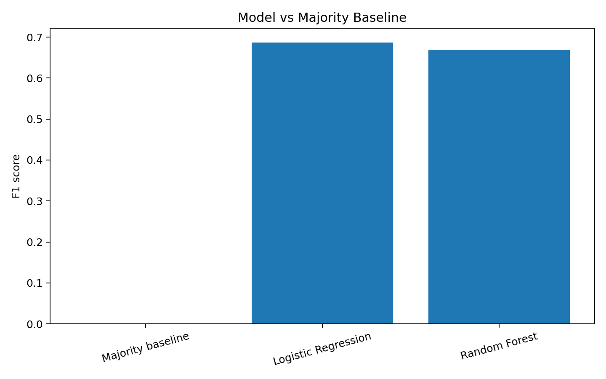
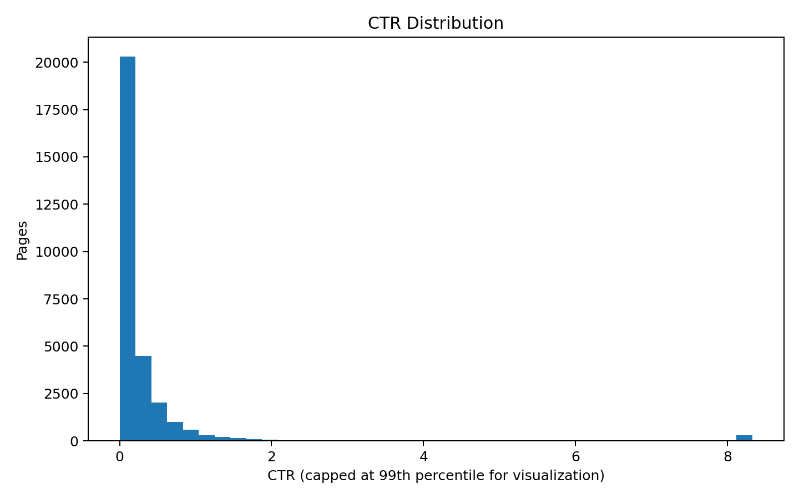

FlyRank ML Internship Capstone — CTR / Engagement Opportunity Scoring
A reproducible decision-support model for prioritizing content records with meaningful search visibility and comparatively low CTR.
This study asks which content records can be prioritized for review when they combine meaningful search visibility with comparatively low click-through rate (CTR). Using the FlyRank anonymized dataset, the analysis defines an opportunity profile from the 75th percentile of 90-day impressions and the median non-zero CTR, then evaluates a leakage-aware classification pipeline. A grouped 80/20 train-test split by client was used, with Logistic Regression and Random Forest compared against a majority-class baseline. Logistic Regression achieved an F1 score of 0.687 and ROC-AUC of 0.967. The resulting score is intended as decision support, not as proof of causality or a guarantee of improved Google performance.
Which content records show a combination of high visibility and relatively low CTR, and can a reproducible machine-learning scoring approach prioritize those records for review?
The opportunity label combines high 90-day impressions with comparatively low non-zero CTR. Existing outcome flags and direct target variables were excluded from model features. Validation uses an 80/20 grouped split by client.
| Model | Accuracy | Precision | Recall | F1 | ROC-AUC |
|---|---|---|---|---|---|
| Majority baseline | 0.891 | 0.000 | 0.000 | 0.000 | N/A |
| Logistic Regression | 0.902 | 0.526 | 0.991 | 0.687 | 0.967 |
| Random Forest | 0.893 | 0.504 | 0.997 | 0.670 | 0.950 |


The complete notebook is included under
work/capstone_ctr_opportunity.ipynb.
This project was completed as part of the FlyRank ML Internship. The analysis uses data provided through the FlyRank internship warehouse.
Data credit: FlyRank
```